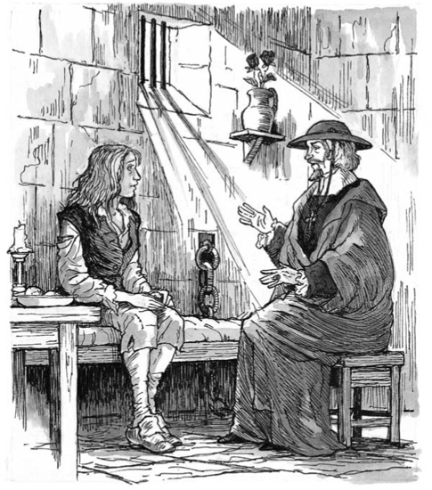
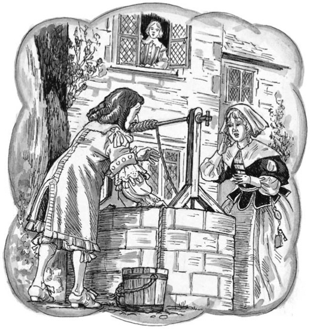

Listen to Part 1:

‘Anh bạn trẻ, anh có một kẻ thù mạnh’, Aramis nói.
‘Đúng vậy. Kẻ thù của tôi hẳn là một nhân vật rất quan trọng’, người tù đáp. ‘Tôi còn là một thằng bé, nhưng đã có ai đó tống tôi vào đây. Tôi mười lăm tuổi —’
‘Việc này xảy ra cách đây tám năm sao?’ Aramis hỏi.
‘Đúng vậy, gần tám năm trước’, chàng trai trẻ đáp. ‘Một ngày, tôi đang ở trong phòng ở nhà mình. Thầy giáo tôi đang ở phòng ông ấy, ở trên phòng tôi. Bỗng nhiên tôi nghe thấy tiếng ông chạy xuống cầu thang. Ông chạy vào vườn và gọi y tá của tôi. Bà ta cũng vào vườn. Hai người họ đi đến cái giếng nước. Cái giếng nằm dưới cửa sổ phòng thầy tôi.’

‘Thầy tôi chỉ về phía cái giếng’, chàng trai trẻ kể. ‘Ông ấy rất lo lắng. “Tôi đánh mất bức thư của Nữ Hoàng rồi!” ông nói với y tá. “Gió thổi bay vào giếng mất!” Y tá của tôi cố trấn tĩnh ông. Bà ta nói với ông ấy rằng: “Chẳng sao cả. Nữ Hoàng đến đây hàng tháng. Bà ấy sẽ đốt hết các bức thư của bà ấy – bà ấy không giữ lại. Ông phải viết thư cho bà ấy. Ông phải kể cho bà ấy về tai nạn này.” Y tá không lo lắng.’
‘Tôi cố hiểu lời y tá nói’, chàng trai trẻ kể. ‘Và đột nhiên, tôi đã hiểu chúng. Có một bà đến nhà tôi hàng tháng. Tôi không biết bà ta. Nhưng tôi nghĩ, “Bà ta chính là Nữ Hoàng!” Tôi rất ngạc nhiên!’
‘Thầy tôi nói chuyện với y tá lần nữa’, chàng trai trẻ kể. ‘Ông ấy nói với bà ta, “Nữ Hoàng sẽ không tin tôi đâu. Bà ấy lúc nào cũng lo lắng về Philippe. Không ai biết về cậu bé đó. Không ai được bao giờ biết về cậu ấy. Chúng ta biết điều đó. Nhưng Nữ Hoàng có tin chúng ta không?” Thầy tôi đưa tay che mặt.’
‘Lúc đó, tôi mới rất ngạc nhiên’, người tù nói. ‘Y tá và thầy tôi đang nói về tôi, Giám mục ơi. Tôi tên là Philippe!’
Listen to Part 2:
‘Rồi thầy tôi lại nói’, Philippe kể. ‘Ông ấy nói, “Nhưng bà nói đúng. Tôi sẽ viết thư cho Nữ Hoàng ngày hôm nay.” Rồi họ quay trở lại nhà.’
‘Chuyện gì xảy ra tiếp theo?’ Aramis hỏi.
‘Một số lính đến nhà’, Philippe cho hay. ‘Họ bắt tôi. Họ đưa tôi đến Bastille. Tôi không bao giờ gặp lại thầy giáo và y tá của mình nữa.’
‘Binh lính của Nữ Hoàng đã giết chết họ’, Aramis nói. ‘Giờ ta có thêm một câu hỏi dành cho anh. Có gương nào trong căn nhà có tường cao đó không?’
‘Gương à?’ Philippe hỏi. ‘Gương là gì? Tôi không hiểu từ đó.’
‘Gương là một tấm kính có tráng kim loại sáng bóng’, Aramis nói. ‘Anh nhìn vào gương và thấy hình ảnh chính mình trong đó.’
‘Thế thì câu trả lời là không’, Philippe đáp. ‘Không có cái nào trong căn nhà đó.’
‘À!’ Aramis nói. ‘Anh biết nhiều về lịch sử đất nước mình thế nào, Philippe?’
‘Tôi biết đôi chút về cuộc sống của các vua Pháp’, Philippe nói. ‘Chỉ có thế thôi.’
‘Thế thì nghe ta nói đây’, Aramis nói. ‘Vua Louis XIII trị vì nước Pháp từ 1610 đến 1643. Trong một thời gian dài, nhà Vua và Hoàng Hậu mong có một đứa con trai. Và ngày 5 tháng 9 năm 1638, Hoàng Hậu Anne hạ sinh một bé trai.’
Listen to Part 3:
Giám mục nhìn chằm chằm vào người tù nhân.
‘Nhà vua đặt tên đứa trẻ là Louis’, Aramis nói. ‘Ngài đưa đứa trẻ khỏi phòng Hoàng Hậu. Ngài muốn cho dân Pháp thấy con trai mình. Nhưng một giờ sau, Hoàng Hậu đã hạ sinh một cậu con trai thứ hai. Y tá của Hoàng Hậu chạy đến gặp Nhà vua và đưa đứa con thứ hai cho ngài xem. Nhà vua không vui về điều đó.’
‘Tại sao vậy, Giám mục?’ Philippe hỏi.
‘Ở Pháp, con trai cả của nhà vua sẽ trở thành vua kế tiếp. Vua Louis XIII rất sợ. Ngài tự hỏi, “Đứa nào là con cả? Con trai thứ của ta có đánh nhau với con cả không? Cậu bé thứ có muốn làm vua không?” Vua Louis rất lo lắng.’
‘Vua Louis nói chuyện với y tá của Hoàng Hậu’, Aramis nói. ‘Y tá đưa đứa con thứ hai ra khỏi cung điện.’
‘Sau đó, đứa trẻ sống bí mật trong một ngôi nhà ở vùng quê’, Aramis nói. ‘Y tá đi cùng đứa trẻ và chăm sóc nó. Sau này, đứa trẻ có một người thầy dạy học.’
‘Người dân Pháp không bao giờ biết về đứa con trai thứ hai này’, Giám mục nói. ‘Giờ thì Louis XIII đã mất. Louis XIV không biết về đứa con thứ. Chỉ có Hoàng Hậu Anne, mẹ của đứa bé, biết về nó. Y tá và thầy giáo cũng biết về nó, nhưng họ đã chết.’
‘Đây là ảnh của nhà vua của chúng ta’, Aramis nói. Ông đưa cho Philippe một bức ảnh nhỏ của Louis XIV. ‘Và đây, một tấm gương.’
Philippe nhìn bức ảnh, rồi nhìn vào gương.
Listen to Part 4:
‘Nhà vua sẽ không bao giờ thả tôi ra khỏi nhà tù này’, Philippe nhẹ nhàng nói. ‘Tôi sẽ không bao giờ trở thành người tự do.’
‘Ai là Vua?’ Aramis hỏi. ‘Người trong bức ảnh, hay người trong gương?’
‘Nhà vua là người ở Điện Louvre’, Philippe buồn bã nói. ‘Không phải người ở Bastille này.’
‘Nhưng ta có thể đưa anh vào cung điện’, Aramis nói. ‘Ta có thể biến anh thành Vua. Khi đó, anh trai anh sẽ vào tù thay anh. Và điều đó sẽ tốt cho người dân Pháp. Anh trai anh là một vị vua tệ bạc. Hắn ta tiêu tiền vào tiệc tùng và quần áo đắt tiền. Hắn ta tiêu tiền vào nhà cửa, ngựa và phụ nữ. Nhưng dân chúng của hắn thì nghèo khổ và đói khát. Nhà vua chẳng làm gì để cứu họ.’
Aramis im lặng một lúc. Rồi ông lại lên tiếng. ‘Ta sẽ chỉ gặp anh ở nơi này thêm một lần nữa.’
‘Khi nào, Giám mục?’ Philippe hỏi.
‘Sớm thôi,’ Aramis đáp. ‘Sớm thôi, ta và bạn bè ta sẽ đưa anh ra khỏi nhà tù này.’